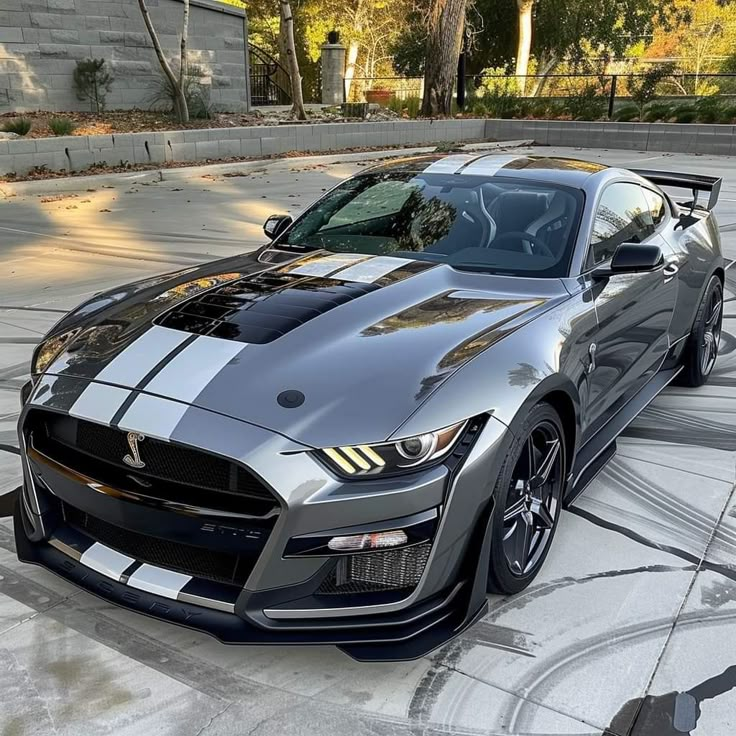
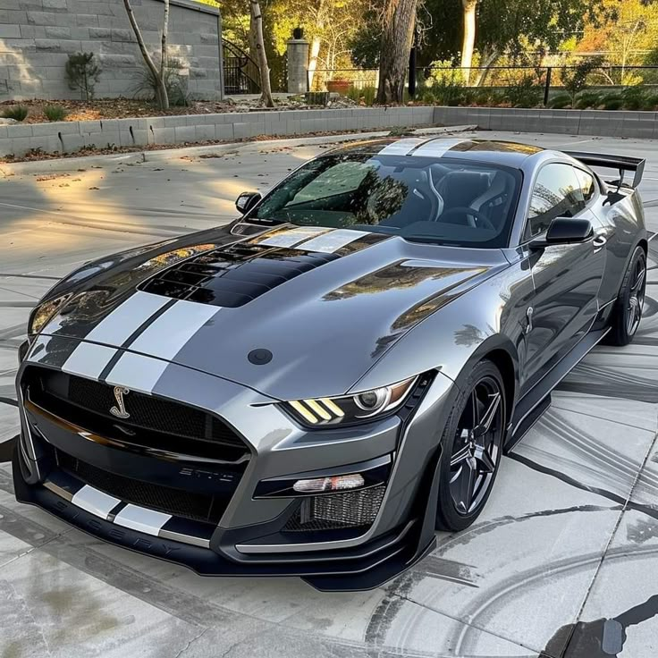

Pagina mostrando os carros super esportivos 🔥 e de luxos para, sua família

A LaFerrari é um supercarro produzido pela Ferrari, lançado em 2013. Ele foi projetado para ser um dos carros mais rápidos e avançados tecnologicamente já produzidos pela marca italiana. A LaFerrari combina um motor V12 a gasolina com um sistema de propulsão híbrido, criando uma potência total de cerca de 950 cv (cavalos-vapor). Esse sistema híbrido, chamado "HY-KERS" (Hybrid KERS), é o mesmo tipo utilizado em carros de Fórmula 1, o que ajuda a melhorar a eficiência de combustível e aumentar a performance do veículo. O design da LaFerrari foi inspirado na aerodinâmica e tem um visual agressivo, com linhas fluídas e detalhes que ajudam a maximizar a estabilidade e o desempenho. Ela é capaz de acelerar de 0 a 100 km/h em menos de 3 segundos e atingir uma velocidade máxima superior a 350 km/h. A produção foi limitada a 499 unidades, tornando-a uma exclusividade. A LaFerrari foi uma das últimas grandes criações de Ferrari com motor a combustão antes do foco crescente em carros elétricos e híbridos. Ela é um símbolo de inovação, luxo e performance, consolidando a Ferrari como uma das marcas líderes no segmento de supercarros de alto desempenho.

O Bugatti Chiron é um hipercarro de luxo produzido pela Bugatti desde 2016 como sucessor do Veyron. Ele se destaca pelo seu motor W16 8.0 litros quadriturbo, capaz de gerar impressionantes 1.500 cv de potência e 1.600 Nm de torque. Com essa potência, o Chiron pode acelerar de 0 a 100 km/h em apenas 2,4 segundos e atingir uma velocidade máxima de 420 km/h (limitada eletronicamente). Em versões especiais, como o Chiron Super Sport 300+, ultrapassa 490 km/h, tornando-se um dos carros mais rápidos do mundo. Seu design combina aerodinâmica avançada e luxo extremo, com materiais nobres como fibra de carbono, couro e alumínio. Além disso, sua produção é limitada, aumentando sua exclusividade e valor no mercado automotivo.
 

O Mustang Cobra é uma versão de alto desempenho do Ford Mustang, desenvolvida pela divisão SVT (Special Vehicle Team) da Ford. Ele foi produzido em diferentes gerações, sendo uma das mais icônicas a SVT Cobra (1993-2004). Destaques do Mustang Cobra: Motor potente: Variou ao longo dos anos, com versões V8, como o 5.0L (1993) e o 4.6L DOHC (1996-2004). A versão de 2003-2004, apelidada de "Terminator", tinha um V8 4.6L supercharged, entregando 390 cv e 540 Nm de torque. Desempenho impressionante: A versão 2003-2004 fazia de 0 a 100 km/h em cerca de 4,5 segundos e atingia velocidade máxima superior a 250 km/h. Design agressivo: Com para-choques exclusivos, capô ventilado e detalhes aerodinâmicos diferenciados. Raridade e legado: Modelos como o Cobra R (1993, 1995 e 2000) eram ainda mais exclusivos e focados em pista, com potência extra e alívio de peso. O Mustang Cobra é um dos muscle cars mais respeitados da Ford, combinando potência bruta, engenharia avançada e um design icônico que o torna desejado até hoje.
A Lamborghini Veneno é um supercarro de edição limitada produzido pela marca italiana Lamborghini para comemorar o 50º aniversário da empresa, lançado em 2013. Seu design é ousado e futurista, com uma estrutura aerodinâmica extremamente agressiva, que remete a um carro de corrida. O modelo foi desenvolvido com foco em desempenho e exclusividade. Ele é equipado com um motor V12 de 6,5 litros que gera aproximadamente 750 cavalos de potência, permitindo uma aceleração de 0 a 100 km/h em cerca de 2,8 segundos, e uma velocidade máxima de 355 km/h. O Veneno foi produzido em três versões de carroceria: coupé, roadster e protótipo. Apenas 14 unidades foram fabricadas, tornando-o extremamente raro e exclusivo. O preço de cada unidade na época ultrapassava os 4 milhões de euros. Além de sua performance impressionante, o Veneno é um exemplo de inovação tecnológica e design radical, com materiais como fibra de carbono utilizados para reduzir peso e melhorar a rigidez do veículo, o que proporciona melhor desempenho e manuseio. Em resumo, a Lamborghini Veneno é um supercarro extremamente exclusivo, projetado para impressionar tanto pelo seu visual quanto pelas suas capacidades de performance, representando a excelência e o luxo da marca Lamborghini.
O Koenigsegg Jesko é um hipercarro de alto desempenho produzido pela fabricante sueca Koenigsegg, lançado oficialmente em 2019. Ele foi desenvolvido para ser um dos carros de rua mais rápidos e avançados do mundo, com foco em velocidade, aerodinâmica e inovação tecnológica. O Jesko é equipado com um motor V8 biturbo de 5,0 litros, que pode gerar até 1.600 cavalos de potência quando abastecido com combustível E85, o que permite uma aceleração impressionante e uma velocidade máxima superior a 480 km/h, dependendo da versão e das configurações de aerodinâmica. Um dos destaques do Jesko é sua transmissão de 9 marchas, chamada Light Speed Transmission (LST), que permite trocas de marcha ultrarrápidas, melhorando ainda mais a performance do carro. Além disso, o veículo conta com uma aerodinâmica ativa, que ajusta a posição do spoiler e outros elementos para otimizar a performance dependendo da velocidade e das condições de condução. O design do Jesko é extremamente aerodinâmico, com o objetivo de reduzir a resistência do ar e aumentar a estabilidade em altas velocidades. O carro também usa materiais leves e de alta resistência, como fibra de carbono, para garantir máxima performance e segurança. Com uma produção limitada e um preço altíssimo, o Koenigsegg Jesko se posiciona como um dos supercarros mais exclusivos e tecnológicos do mercado, representando a busca incessante da marca por performance extrema e inovação.
Considerado um dos carros mais luxuosos do mundo, o Rolls-Royce Phantom oferece conforto extremo, tecnologia avançada e um design sofisticado. Com acabamento personalizado e motores potentes, é um símbolo de status e elegância.
A BMW X7 é uma das melhores opções de SUV de luxo para famílias. Ela oferece três filas de bancos, acomodando até 7 pessoas com conforto. O interior é repleto de materiais de alta qualidade, como couro, madeira e alumínio. Além disso, a performance e a tecnologia avançada fazem dela uma escolha incrível para longas viagens em família.
A Range Rover Velar é um SUV elegante que oferece um ótimo equilíbrio entre luxo, desempenho e praticidade. Com um design moderno e sofisticado, ele possui um interior espaçoso e confortável, com materiais de alta qualidade e um sistema de entretenimento de ponta. Ideal para famílias que querem sofisticação e um desempenho robusto.
O Porsche Cayenne combina esportividade e luxo de uma maneira única. Além de ser super confortável, ele tem um desempenho incrível para quem busca algo mais dinâmico. O espaço interno é ótimo para famílias, com boa capacidade no banco traseiro e no porta-malas. Com um design sofisticado e acabamento impecável, ele entrega uma experiência de direção premium.